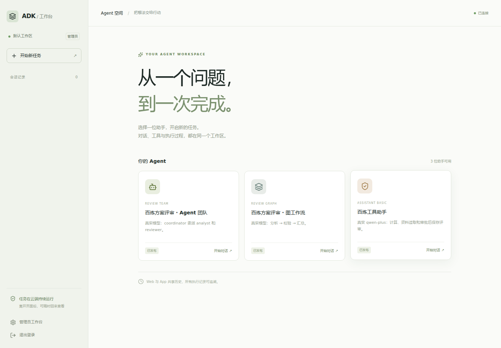
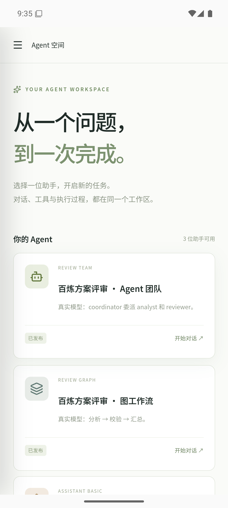
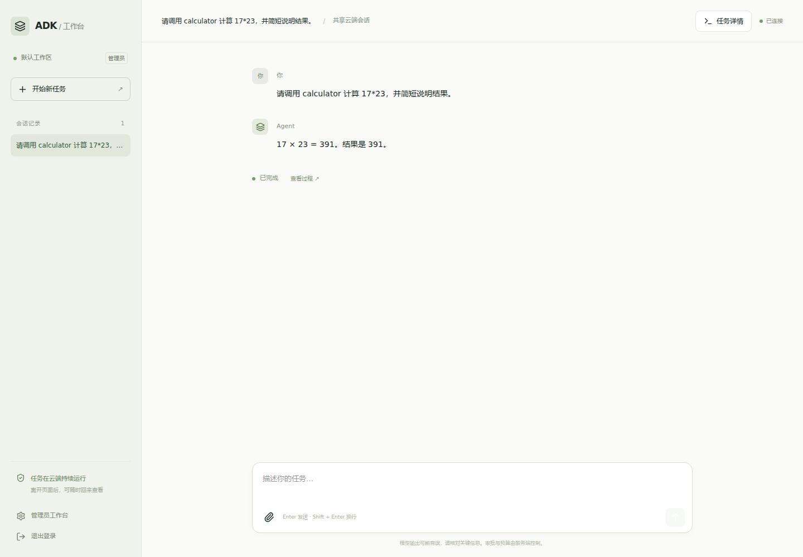
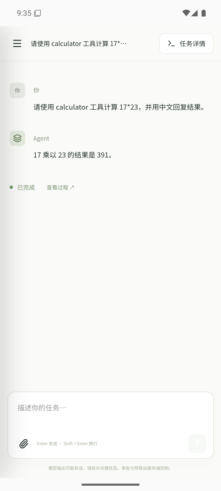
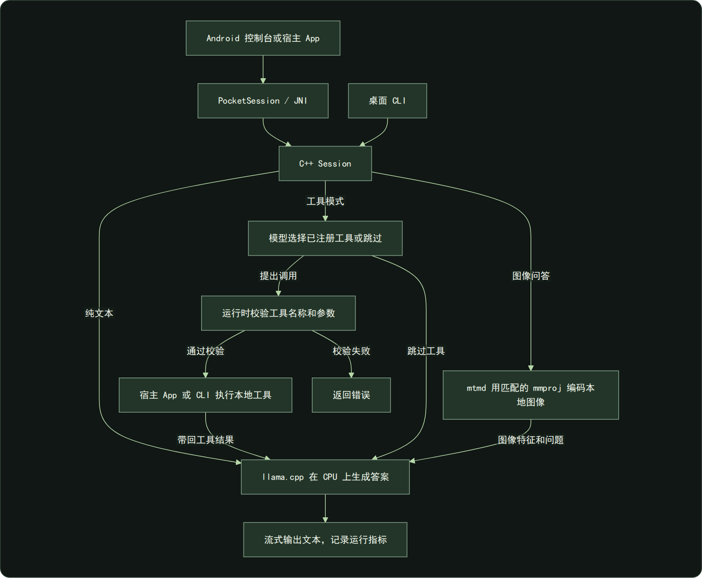
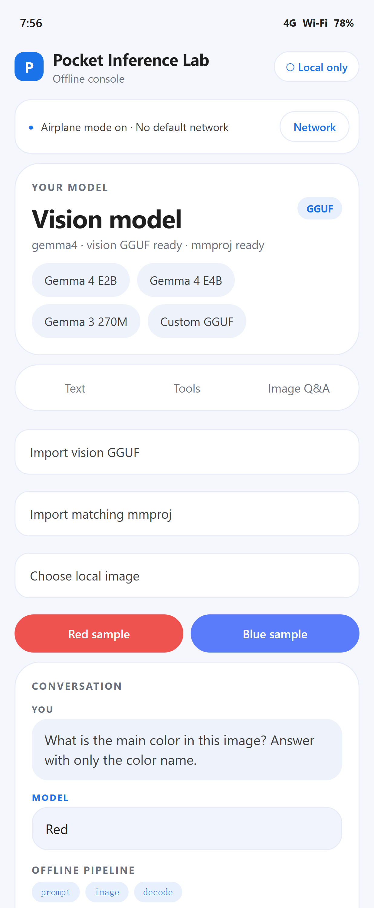

从 Agent 工作台
到端侧离线推理
Foogle 负责发布和执行 Agent，并在调用图里展示每一步。Pocket Inference Lab 让应用在设备上运行模型、调用本地工具和识别图像。
查看项目Web / Android · Agent 编排与运行追踪
Foogle
管理员配置模型、工具和调用预算，再发布 Agent 版本。成员在工作台发起任务、处理工具审批，并通过调用图查看模型、工具、MCP 和插件的参数与结果。
云端任务怎样执行
- Web / AndroidReact 共享客户端
- FastAPI鉴权、提交任务、读取事件
- PostgreSQL会话、队列、租约与执行事件
- 独立 Worker领取任务并驱动 ADK Runner
浏览器关闭后，独立进程可继续执行已领取的任务。重新连接时，界面可通过 SSE 从已读游标续读事件。ADK Runner 按已发布版本调用模型和工具，状态 SDK 将会话状态、事件和平台消息投影写入同一事务。
Web 与 Android 界面对照
两端共用界面主题。以下为同一主题下的 Agent 目录和计算器对话，采用各端实际验证截图。
Agent 目录




计算器工具对话




Web 与 Android 功能对照
仓库当前能力清单中的 10 个模块在两端均已开启。下方也列出基础工作台和管理功能，并标明各端的操作差异与验收边界。
| 功能 | Web | Android |
|---|---|---|
| Agent 与会话 | 从目录使用工具助手、图工作流或 Agent 团队，浏览会话和任务记录。 | 共用已发布 Agent 和账号记录。支持新建、打开和删除会话。 |
| 流式聊天与审批 | 流式回复、任务状态、待审批工具、TXT / Markdown 附件与任务产物。 | 支持相同任务流程，使用系统文件选择界面。跨端审批仍需专项设备验收。 |
| 富文本消息 | Markdown、公式、代码、表格、引用和脚注。 | 表格可横滑，代码用原生剪贴板复制，外链交给系统浏览器。 |
| 会话命名 | 手动重命名或请求模型自动命名，历史和侧栏同步。 | 同一命名接口。安装包已验证命名、失败重试及系统返回键。 |
| 动态调用图 | 模型、工具、MCP、插件节点，支持筛选、布局保存、全屏和单轮详情。 | 默认纵向排列，轻点打开全屏节点详情，系统返回键逐层关闭。 |
| 画布操作 | 拖动节点、平移、缩放和适应视图。拖动调整显示位置。 | 触控拖动、双指缩放、横竖屏与全屏切换，保留布局。 |
| AgentLoop 拆解与回放 | 跟随实时事件，历史回放支持暂停、定位和调速。 | 复用回放控件，支持全屏。新增的实时与回放切换仍待新版 APK 复验。 |
| 在线模型调试 | 使用临时密钥测试 Gemini、DashScope 或自定义接口，查看流式和工具结果。 | 支持同一调试协议，切后台清空临时密钥，键盘避让输入区。 |
| 插件中心 | 搜索、安装、更新连接和启停插件，提供 GitHub 只读连接。 | 共用账号和插件配置，切后台清除未保存的凭据。 |
| MCP 中心 | 新增连接，发现 HTTP / SSE 工具，逐项授权并查看轨迹。 | 共用连接和授权。表单适配触屏，切后台清除未保存的 Token。 |
| Skills 中心 | 创建、编辑、启停和导入导出 SKILL.md。 | 从系统文件选择器导入，通过系统保存窗口导出 Markdown。 |
| Google 登录与绑定 | 已配置 OAuth 时可登录或绑定 Google 账号，进入原工作区。 | 使用系统账号选择器，需登记签名并配置 HTTPS 后端。真实 Google 授权仍待设备验收。 |
| 管理员工作台 | 配置、探测模型连接，设置工具与预算，发布 Agent 版本并查看审计。 | 共用管理 API，管理列表适配单列，表单和详情采用全屏布局。 |
| 本地模型与离线问答 | 连接 API 所在机器上的模型服务，用于服务器侧 Agent 推理。 | 带 Pocket SDK 的离线安装包可导入 GGUF，在设备上进行离线问答。 |
功能口径来自 Foogle 的 Web / Android 平台清单和验证记录。界面证据包含协议夹具与 Android 模拟器测试，真实模型验证与设备覆盖按各项记录说明。
验证范围
仓库记录了 Web 上的真实 DashScope qwen-plus 工具调用闭环，以及 Android 15 模拟器上的安装、真实工具对话和重开后的历史恢复。Web 全栈回归还使用 Mock 模型覆盖确定性流程。物理手机和 iOS 的完整验收仍待完成。
Android SDK / 桌面 CLI · 端侧推理
Pocket Inference Lab
Android SDK 通过 JNI 调用 C++ 运行时，桌面 CLI 共用同一套 Session API。设备通过 llama.cpp 载入本地 GGUF 权重，流式输出文本。图像问答需要视觉模型及与之匹配的 mmproj 投影文件。
模型运行回放
执行步骤
模型与可回放场景
| 模型 / 格式 | 已有验证记录 |
|---|---|
| Gemma 4 E2B IT · Q4_0 | 桌面文本、工具、红蓝图像及持续解码。视觉样例使用配套的 Q8_0 mmproj。LLM 评测通过 5 / 5 项。 |
| Gemma 4 E4B IT · GGUF | 仓库列出的同架构候选兼容模型。公开验证材料中尚缺可回放记录。 |
| Gemma 3 270M IT · Q8_0 | 桌面和 Android 模拟器的文本与本地工具。桌面包含运算、路由偏差和持续解码未达标的记录。 |
| SmolLM2 135M Instruct · Q4_K_M | 桌面文本冒烟测试。工具参数选择存在不一致，缺少可回放的完整调用轨迹。 |
| SmolVLM 256M Instruct · Q8_0 | 桌面红蓝样例，Android 模拟器红蓝样例和导入绿色 PNG。图像问答均使用匹配的 mmproj。 |
数据出自 Pocket Inference Lab 的验证记录。Android 结果来自 Android 15 x86_64 模拟器。持续性能和发热的真机数据仍待验证。

文本生成
模型权重已在设备上时，运行时可以在断网状态下生成回复。Android 和桌面入口都能记录首段输出延迟和生成速度。
本地工具
模型从已注册工具中提出调用，运行时校验工具名和参数，宿主应用负责权限与执行。工具结果再交给模型生成回答。
图像问答
视觉模型和投影文件在本地编码所选图片。验证使用同一个问题识别不同颜色的样例，并检查回答是否随图片变化。



离线验证结果
桌面 Linux · Gemma 4 E2B IT Q4_0
Intel Core i7-14700，4 个 CPU 线程，2,048-token 上下文，桌面样本。
- 文本首段输出
- 182 ms
- 持续解码速度
- 18.5 tok/s
- LLM 评测通过
- 5 / 5
Android 15 模拟器 · 飞行模式
x86_64 / API 35，关闭 Wi-Fi 和移动数据。各场景使用记录中的独立样本。
- Gemma 3 文本首段
- 0.47 s
- Gemma 3 工具回答首段
- 1.90 s
- SmolVLM 红 / 蓝图识别
- 5.85 / 8.67 s
这些数值来自桌面和模拟器测试。真机的持续性能、内存与发热仍需用目标设备验证。
Foogle 接入本地 Gemma
Foogle 通过 OpenAI 兼容接口连接 llama-server 上的 Gemma 4 E2B。模型提出计算器调用，Foogle 的 Agent 执行工具，浏览器收到了流式回复，并在调用图中显示 calculator 节点。
- 发送任务
17 × 23 - 调用工具
calculator - 返回结果
391